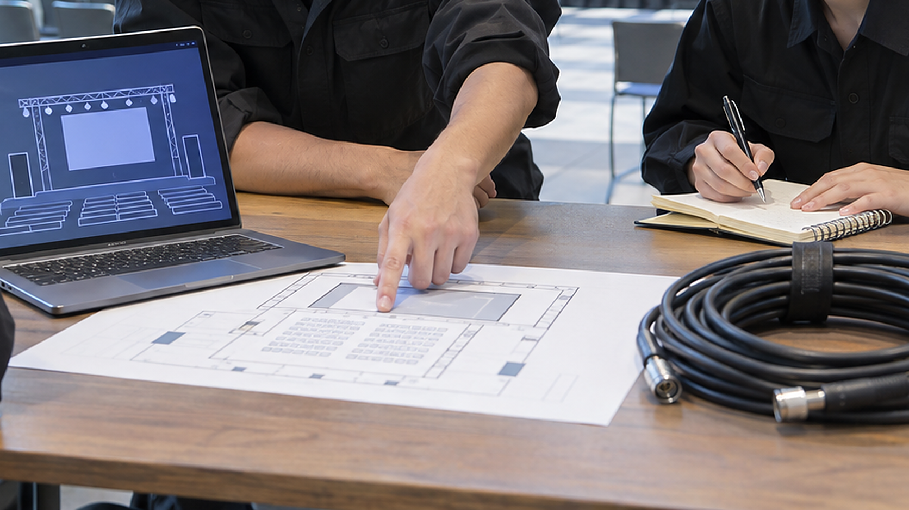

LOTUS JOURNAL / 経営の知恵と現場 #07
なぜ熟練者ほど、読み上げるのか。
チェックリストが生まれた日
「そんなの、言われなくても分かっている」。熟練者ほど、確認の紙を嫌います。
けれど航空の世界では、いちばん腕のいいパイロットほど、毎回同じ紙を声に出して読みます。その習慣は、ある墜落事故から始まりました。
01 / WRIGHT FIELD1935 年 10 月 30 日、ライト飛行場
その日、オハイオ州デイトンのライト飛行場で、ボーイングの新型爆撃機「Model 299」が審査飛行に臨みました。4 発エンジン、当時としては巨大な機体。のちに 1 万機以上が作られる B-17 の原型です。操縦席には、陸軍航空隊の主任試験飛行士と、ボーイングの試験飛行士。腕前に疑いのある人は、一人もいませんでした。
機体は滑走路を離れ、通常より高く機首を上げ、失速し、墜落して炎上しました。陸軍の主任試験飛行士ピート・ヒルは死亡し、ボーイングのレス・タワーも「火傷で死亡」。副操縦士は「私はひどい火傷を負った」と証言しています。
調査委員会は、エンジンにも構造にも異常を見つけませんでした。原因は「ラダーとエレベーターの操縦翼面がロックされた状態(主に後者)」。地上で風に動かないよう舵を固定するロックを、離陸前に外し忘れていたのです。副操縦士の証言はこうです。「ヒルも私も、操縦系統のロックを解除していなかった」。
02 / HUMAN MEMORY腕ではなく、記憶が限界だった
事故のあと、「この飛行機は大きすぎて人の手に負えない」という声が上がりました。Air & Space Forces Magazine の記事は、「航空隊は、この機体は大きすぎて扱えないという議論に直面した」と記しています。
しかし、航空隊の人々が出した答えは、機体を小さくすることでも、もっと優秀なパイロットを探すことでもありませんでした。同誌はこう書いています。「ここでの限界要因は、機体の大きさや複雑さではなく、人間の記憶だった」。
それまでの機体は、舵を赤い吹き流しつきの木片で固定していました。外にぶら下がっているので、外し忘れは目で見えた。Model 299 は内部ロックを採用し、外からは見えなくなっていた。進歩が、確認を「見れば分かる」から「覚えていなければならない」に変えてしまったのです。
熟練者が失敗するのは、知らないからではありません。知っていることを、その瞬間に思い出せなかったからです。手順が増え、装置が内側に隠れるほど、記憶への負荷は増える。腕を磨いても、記憶の容量は増えません。
03 / ONE SHEET紙 1 枚が変えたもの
航空隊が作ったのは、紙 1 枚でした。同誌によれば、「航空隊の職員は、乗員が離陸、飛行、着陸前、着陸後に従うチェックリストを作成した」。覚えるのではなく、読む。一人が読み上げ、もう一人が確かめて答える。
チェックリストは、腕の悪い人のための補助輪ではありませんでした。腕のいい人が、腕と関係のない理由で死なないための道具でした。同誌はその効果を、「その後の数十年で、ほぼ疑いなく何千もの命を救った」と評しています。
ここで大事なのは、チェックリストが「やり方を教える紙」ではないことです。教える紙なら、熟練者には要らない。チェックリストは、「やったかどうかを確かめる紙」です。だから熟練者にこそ要る。熟練者は手順を知っているぶん、「やったつもり」になりやすいからです。
04 / AFTER SETUP設営のあとの、声に出す確認
ここからが、私たちの話です。イベントの設営が終わった瞬間は、Model 299 が滑走路の端に着いた瞬間に似ています。全部つないだ。映った。あとは離陸するだけ——その気持ちのときに、ロックの外し忘れは起きます。
映像の現場の「ロック」は何でしょうか。予備機の電源が入っていない。配信の出力先が、リハーサル用の設定のまま。待機画面が最新版に差し替わっていない。モニターの入力が、本番とは別の系統を映している。どれも、一度は確認したはずのことです。そして、どれも外からは見えません。
設営の終わりに、声に出す確認を、短い一覧で持つ。やり方を書くのではなく、「やったか」を聞く形で。「予備機、電源入っていますか」「はい、入っています」。一人が読み、一人が答える。熟練者ほど、この 1 分を省きたくなります。だからこそ、省かない人が熟練者です。
航空のチェックリストが効いたのは、短かったからでもあります。全部を書けば、誰も読まなくなる。「それを忘れると本番が止まるもの」だけを選び、短く保つ(機種・現場で必要な安全項目は削らずに)。長い手順書は別に持ち、読み上げるのは短い確認だけにします。
LOTUS の現場では
LOTUS の技術提供では、設営の終わりを「映ったとき」ではなく「指定した画面に映像が届き、その状態を次の担当へ渡せるとき」と決めています。渡せるかどうかを確かめるのが、設営後の確認です。
リハーサルでは、素材の順番、切り替えの合図、変更時の連絡方法、予備機の有無と切り替える人を、声に出して合わせます。覚えているかではなく、言えるかで確かめます。
今日の持ち帰り
- 限界は腕ではなく記憶。手順が増え、装置が内側に隠れるほど、確認は「見れば分かる」から「覚えていなければならない」に変わる。
- 確かめる紙は、熟練者のため。やり方ではなく「やったか」を聞く。一人が読み、一人が答える。
- 短く。忘れると本番が止まるものだけを選ぶ(機種・現場で必要な安全項目は削らずに)。長い手順書とは分ける。
出典:Air Force Historical Foundation「30 Oct 1935」(事故の場所、原因「the locked condition of the rudder and elevator surface controls (primarily the latter)」、副操縦士の証言「Neither Hill nor I had unlocked the controls.」、死傷者)、Air & Space Forces Magazine「The Checklist」(2013年8月。「the aircraft was too big to handle」「the limiting factor here was human memory, not the aircraft's size or complexity」「Air Corps personnel developed checklists…」「saved thousands of lives」)。引用は「」で示し、英語を日本語に訳しています。「教える紙と確かめる紙」の整理と 4 章は本記事の考察です。会場の場面は説明のためのもので、特定の案件を表しません。2026年11月8日閲覧。